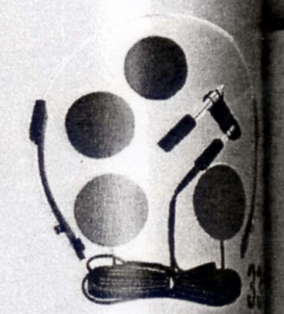
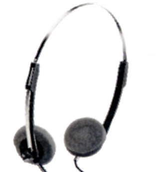

HP-16


■価格 3,500円■型式 ダイナミック型■振動板 ■インピーダンス ■再生周波数帯域 ■許容入力 ■感度 ■コード ■重量 49g（コード・プラグ含む）■発売 1982年頃■販売終了 1984年以降■備考 82年のサウンドレコパル誌に記載HP-33と同時期の組立式のヘッドフォンのようだ。スペアイヤパッド、変換アダプター付属販売終了時期は不明だが、1984年4月版カタログには掲載されていた。
マランツのインデックスへ